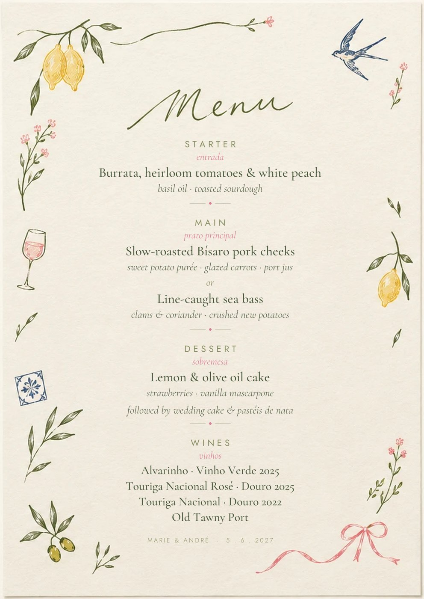
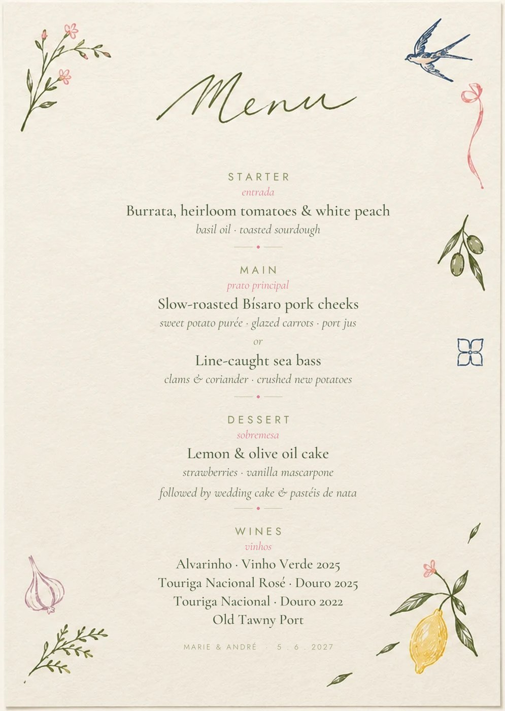
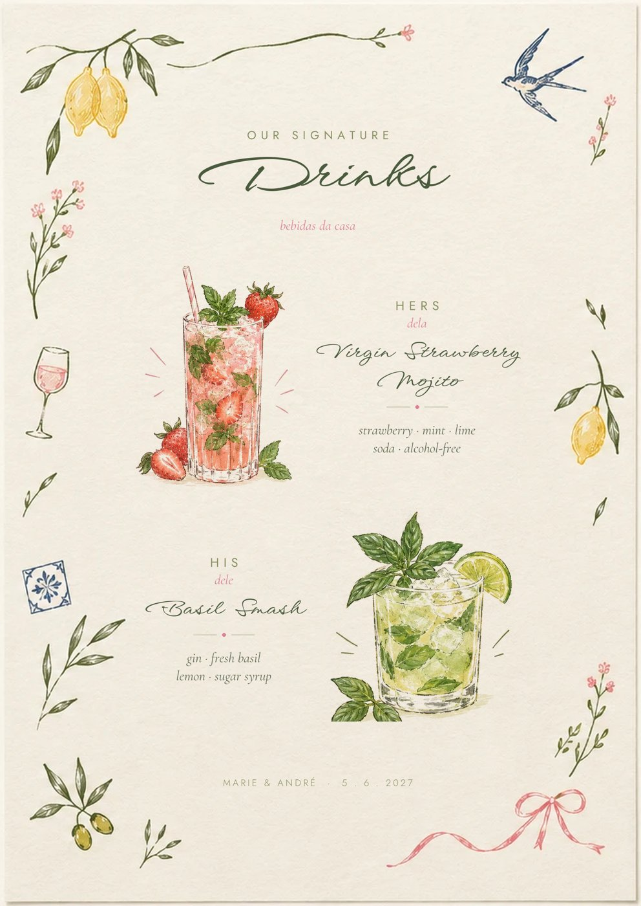
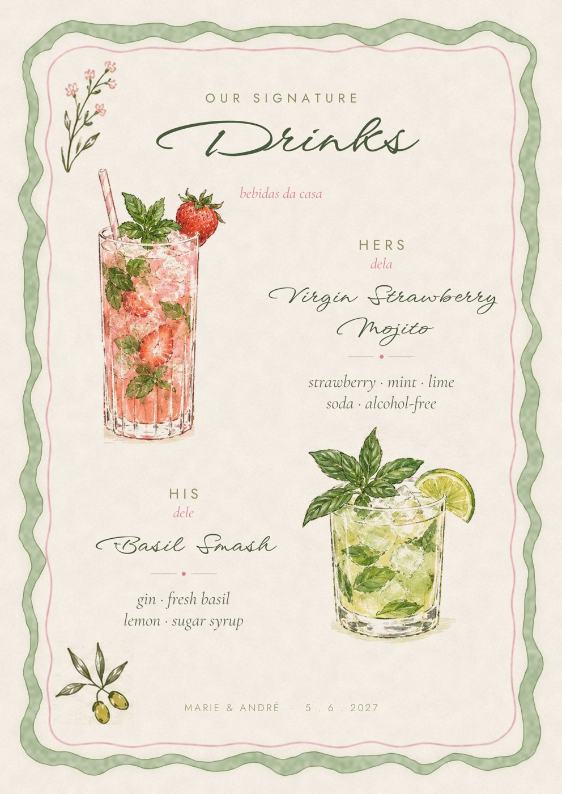

08Stationery
The table, on paper
Rectangular A6 and A5 card you can feed through a printer, with no die-cuts and no trimming. Watercolour, not pen. Use digits rather than words, so they read the same in Portuguese and English.




Table numbers
oil paintings · places that matter
Template studio
Edit it, print it
Every template uses the real brand: painted pieces, the border, the doodles and the three typefaces. Change the words, choose a layout, then save it as a print-ready PDF or a PNG. Your edits stay in your browser.
Open the studio- MenuA5 · 4 layouts
- Signature drinksA5 · his & hers
- Table numberA6 · 20 paintings
- Place cardsA4 sheet of 10
- Order of the dayA5 · doodled
- Welcome signA-series · any size